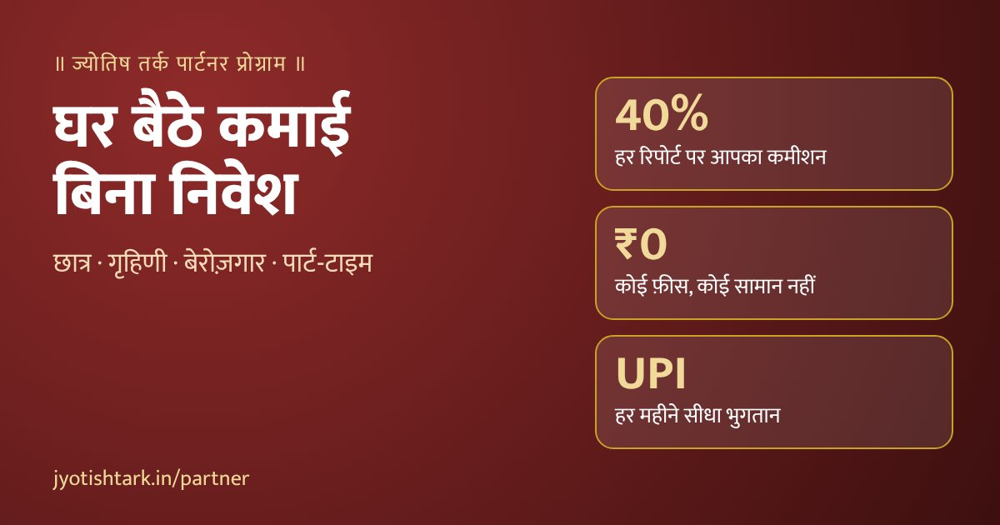

॥ छात्र · गृहिणी · बेरोज़गार · पार्ट-टाइम ॥
घर बैठे पैसे कैसे कमाएँ — बिना निवेश, कमीशन से कमाई की पूरी गाइड
पढ़ाई का ख़र्च, नौकरी की तलाश के बीच अपना जेब-ख़र्च, या घर के काम के साथ थोड़ी अपनी कमाई — बहुत से लोग ऐसा काम ढूँढते हैं जिसमें न पैसा लगाना पड़े, न सामान रखना पड़े, और जो फ़ोन से हो जाए। इस लेख में हम सीधी-सीधी बात करेंगे कि कमीशन (एफ़िलिएट) से कमाई कैसे होती है, Jyotish Tark पार्टनर प्रोग्राम में आपको असल में कितना मिलता है, और इसे ईमानदारी से कैसे करें — बिना किसी झूठे "लाखों कमाएँ" वाले वादे के।
लेखक: आचार्य ज्ञानेंद्र सिंह तोमर, Jyotish Tark, लखनऊ · प्रकाशित: 20 नवंबर 2026 · पढ़ने का समय: 8 मिनट

कमीशन से कमाई (एफ़िलिएट) क्या होती है?
कमीशन से कमाई का मतलब है — किसी कंपनी का सामान या सेवा आप अपने जान-पहचान के लोगों को सुझाते हैं, और जब वे उसे ख़रीदते हैं तो कंपनी आपको बिक्री का एक हिस्सा देती है। इसे इंग्लिश में affiliate marketing या referral earning कहते हैं। Amazon, Flipkart, बैंक और बीमा कंपनियाँ भी इसी तरह काम करवाती हैं।
इसमें सबसे बड़ी बात भरोसा है। लोग किसी विज्ञापन से ज़्यादा उस व्यक्ति की बात मानते हैं जिसे वे जानते हैं। इसीलिए यह काम उन लोगों के लिए सबसे अच्छा है जिनके पास दोस्त, रिश्तेदार, पड़ोसी, कॉलेज ग्रुप या सोशल मीडिया पर ऐसे लोग हैं जो उनकी बात सुनते हैं।
Jyotish Tark पार्टनर प्रोग्राम ही क्यों?
भारत में कुंडली, कुंडली मिलान, बच्चे के नाम का अक्षर, मोबाइल नंबर का अंक, साढ़ेसाती — ये सवाल लगभग हर घर में कभी न कभी आते हैं। शादी का मौसम हो, बच्चे का जन्म हो या नया साल — लोग ख़ुद ढूँढते हैं। यानी आपको किसी को ज़बरदस्ती कुछ बेचना नहीं, बस सही समय पर सही चीज़ बतानी है।
- कोई फ़ीस नहीं: जुड़ना पूरी तरह मुफ़्त है।
- कोई सामान नहीं: न स्टॉक, न पैकिंग, न डिलीवरी — रिपोर्ट ऑनलाइन बनती है, रुद्राक्ष हम भेजते हैं।
- ग्राहक का भी फ़ायदा: आपके लिंक से ख़रीदने पर उन्हें 20% छूट मिलती है, इसलिए सुझाना आसान है।
- सब साफ़-साफ़: हर बिक्री आपके अपने डैशबोर्ड पर दिखती है — कोड और PIN डालकर कभी भी देखें।
- हर महीने भुगतान: हर बिक्री का कमीशन 1–2 दिन में सीधे UPI में।
- असली सेवाएँ: रिपोर्ट आचार्य ज्ञानेंद्र सिंह तोमर (लखनऊ) की देखरेख में हमारी अपनी गणना से बनती हैं, और ज्योतिष को हम मार्गदर्शन की तरह पेश करते हैं, गारंटी की तरह नहीं।
कौन जुड़ सकता है?
कोई भी, जिसके पास एक स्मार्टफ़ोन, UPI वाला बैंक खाता और कुछ ऐसे लोग हैं जो उस पर भरोसा करते हैं:
- कॉलेज के छात्र — हॉस्टल, कोचिंग और परिवार के ग्रुप में; पढ़ाई के साथ ख़ाली समय में।
- नौकरी ढूँढ रहे युवा / बेरोज़गार — तैयारी के साथ थोड़ी अपनी कमाई।
- गृहिणियाँ — मोहल्ले, किटी पार्टी और रिश्तेदारों में, जहाँ शादी और बच्चों की बातें होती ही हैं।
- पंडित जी और पुरोहित — नामकरण, विवाह और पूजा के यजमानों के लिए।
- मैरिज ब्यूरो, फ़ोटोग्राफ़र, ज्वेलर्स, दुकानदार — जिनके ग्राहक पहले से ऐसे मौक़ों पर आते हैं।
- YouTuber और इन्फ़्लुएंसर — भक्ति, ज्योतिष या परिवार वाले चैनल।
पार्टनर कैसे बनें — 4 आसान स्टेप
- WhatsApp पर संदेश भेजें: +91 83185 13814 पर "पार्टनर बनना है" लिखें और अपना नाम बताएँ।
- कोड और PIN पाएँ: आपको अपना पार्टनर कोड (जैसे SHARMAJI) और एक PIN मिलेगा। आपका कोड लगा हुआ लिंक भी मिलेगा।
- लिंक शेयर करें: अपना लिंक जान-पहचान वालों, ग्रुप या स्टेटस पर भेजें। लिंक खोलने पर ग्राहक को भुगतान के समय छूट अपने-आप दिखती है; चाहें तो वे भुगतान के समय आपका कोड भी डाल सकते हैं।
- डैशबोर्ड पर बिक्री देखें, हर महीने पैसा पाएँ: पार्टनर डैशबोर्ड पर कोड और PIN डालकर हर पक्की बिक्री और कमीशन देखें। हर बिक्री का कमीशन 1–2 दिन में UPI पर।
कितना मिलता है? — असली हिसाब
कमीशन उस रक़म पर मिलता है जो ग्राहक असल में भुगतान करता है (छूट के बाद)। नीचे हर उत्पाद का सीधा हिसाब है:
| उत्पाद | पूरी क़ीमत | ग्राहक देता है | आपका कमीशन |
|---|---|---|---|
| सम्पूर्ण कुंडली (35+ पेज) | ₹1,101 | ₹881 (20% छूट) | ≈ ₹352 (40%) |
| KP रिपोर्ट / अंक ज्योतिष रिपोर्ट | ₹299 | ₹239 | ≈ ₹95 |
| मोबाइल नंबर रिपोर्ट | ₹199 | ₹159 | ≈ ₹63 |
| ज्योतिषी से एक प्रश्न | ₹101 | ₹81 | ≈ ₹32 |
| प्रमाणित रुद्राक्ष | ₹499 से | 10% छूट के बाद | 15% — ₹499 वाले पर ≈ ₹67, महँगे रुद्राक्ष पर ज़्यादा |
उदाहरण (सिर्फ़ समझने के लिए): अगर एक महीने में आपके लिंक से 5 मोबाइल नंबर रिपोर्ट, 4 KP/अंक ज्योतिष रिपोर्ट और 2 सम्पूर्ण कुंडली बिकती हैं, तो आपका कमीशन लगभग 5×63 + 4×95 + 2×352 = ₹1,399 होगा। अगर हफ़्ते में 3 सम्पूर्ण कुंडली बिकें (महीने में लगभग 12), तो लगभग ₹4,200।
ईमानदारी से: ये सिर्फ़ उदाहरण हैं। कई लोगों के पहले महीने में 1–2 बिक्री होती है, और कुछ महीनों में कोई नहीं। यह पार्ट-टाइम अतिरिक्त कमाई का ज़रिया है, नौकरी या तय आमदनी नहीं। जो कोई "बिना मेहनत लाखों" का वादा करे, उससे सावधान रहें।
बिक्री के 7 ईमानदार और असरदार तरीक़े
- सही मौक़ा पहचानें: किसी की शादी की बात चल रही हो तो कुंडली मिलान; बच्चे का जन्म हो तो नाम अक्षर और सम्पूर्ण कुंडली; नया फ़ोन नंबर लिया हो तो मोबाइल नंबर रिपोर्ट।
- पहले मुफ़्त टूल दिखाएँ: Jyotish Tark पर मुफ़्त कुंडली, गुण मिलान, मोबाइल नंबर अंक और "आपका 2027" मुफ़्त हैं। लोग पहले मुफ़्त देखते हैं, पसंद आए तो विस्तृत रिपोर्ट लेते हैं।
- WhatsApp स्टेटस: रोज़ का पंचांग या एकादशी की तारीख़ स्टेटस पर लगाएँ और साथ में अपना लिंक — लोग रोज़ आपसे जुड़ते हैं।
- त्योहार और सीज़न: नया साल (वर्षफल), शादी का मौसम (मिलान), नवरात्रि और सावन (रुद्राक्ष) — इन समयों पर लोग ख़ुद पूछते हैं।
- अपने शब्दों में बताइए: लंबा विज्ञापन कॉपी-पेस्ट करने के बजाय दो लाइन में बताइए कि आपको क्या पसंद आया।
- ग्रुप के नियम मानें: किसी ग्रुप में बार-बार एक ही संदेश न डालें; पहले अपनी पहचान और भरोसा बनाइए।
- सवालों के लिए हमसे जोड़ें: ग्राहक का कोई सवाल हो तो उन्हें हमारा WhatsApp नंबर दे दें — जवाब हम देंगे।
क्या न करें
- किसी से यह वादा न करें कि रिपोर्ट या रुद्राक्ष से नौकरी, शादी या बीमारी में पक्का फ़ायदा होगा — ज्योतिष मार्गदर्शन है, गारंटी नहीं।
- अनजान लोगों को स्पैम संदेश न भेजें, न किसी का नंबर बिना पूछे ग्रुप में जोड़ें।
- अपने कोड से ख़ुद को या नक़ली ग्राहक बनाकर छूट/कमीशन लेने की कोशिश न करें — ऐसी बिक्री रद्द की जा सकती है।
- Jyotish Tark के नाम से कोई अलग वेबसाइट, पेज या भुगतान लिंक न बनाएँ — हमेशा अपना आधिकारिक लिंक ही भेजें।
छात्रों और बेरोज़गारों के लिए यह अच्छा विकल्प क्यों है?
- शून्य जोखिम: पैसा नहीं लगता, इसलिए डूबने का डर नहीं।
- समय आपका: रोज़ 15–20 मिनट भी काफ़ी है; परीक्षा के दिनों में बंद रखिए, कोई दबाव नहीं।
- असली हुनर सीखेंगे: लोगों से बात करना, भरोसा बनाना, सोशल मीडिया पर लिखना — ये हुनर आगे किसी भी नौकरी या व्यापार में काम आते हैं।
- पारदर्शी हिसाब: आपकी हर बिक्री डैशबोर्ड पर, और भुगतान सीधे आपके खाते में।
ज़रूरी सलाह: इसे अपनी पढ़ाई या मुख्य काम की जगह नहीं, उसके साथ एक छोटे अतिरिक्त ज़रिये की तरह रखें।
आज ही मुफ़्त जुड़ें
WhatsApp पर "पार्टनर बनना है" लिखें — कोड और PIN मिलते ही शुरू करें।
WhatsApp पर पार्टनर बनें पार्टनर प्रोग्राम PDF देखें पार्टनर डैशबोर्डअक्सर पूछे जाने वाले प्रश्न
क्या पार्टनर बनने की कोई फ़ीस है?
नहीं। Jyotish Tark पार्टनर प्रोग्राम से जुड़ना पूरी तरह मुफ़्त है — न रजिस्ट्रेशन फ़ीस, न कोई सामान ख़रीदना।
एक बिक्री पर कितना कमीशन मिलता है?
रिपोर्ट पर ग्राहक जितना भुगतान करता है, उसका 40% आपका कमीशन है। उदाहरण: सम्पूर्ण कुंडली (₹1,101) पर ग्राहक 20% छूट के बाद ₹881 देता है और आपको लगभग ₹352 मिलते हैं। रुद्राक्ष पर ग्राहक को 10% छूट और आपको 15% कमीशन मिलता है।
कमीशन कब और कैसे मिलता है?
हर पक्की (भुगतान हो चुकी) बिक्री का कमीशन 1–2 दिन में सीधे आपके UPI में भेजा जाता है।
क्या छात्र या बेरोज़गार भी जुड़ सकते हैं?
हाँ। ज़रूरत सिर्फ़ एक स्मार्टफ़ोन, UPI वाला बैंक खाता और ऐसे लोगों की है जो आप पर भरोसा करते हैं। पढ़ाई या दूसरे काम के साथ ख़ाली समय में भी कर सकते हैं।
मुझे कैसे पता चलेगा कि मेरे कोड से कितनी बिक्री हुई?
आपको एक पार्टनर कोड और PIN मिलता है। jyotishtark.in/partner.html पर कोड और PIN डालकर आप अपनी हर बिक्री, तारीख़ और कमीशन ख़ुद देख सकते हैं।
क्या हर महीने तय कमाई की गारंटी है?
नहीं। यह नौकरी या तय वेतन नहीं है — कमाई पूरी तरह आपके कोड से हुई बिक्री पर निर्भर है। जितने लोग आपके लिंक से ख़रीदेंगे, उतना कमीशन मिलेगा।
क्या मुझे ज्योतिष आना ज़रूरी है?
नहीं। रिपोर्ट, भुगतान, डिलीवरी और ग्राहक के सवाल — सब Jyotish Tark संभालता है। आपको बस सही लोगों तक सही जानकारी पहुँचानी है।
क्या इस कमाई पर टैक्स लगता है?
भारत में कमीशन आय आपकी कुल आय में जुड़ती है। आपकी कुल आय टैक्स सीमा से ऊपर हो तो नियम के अनुसार टैक्स देना पड़ सकता है — ज़रूरत हो तो किसी CA से सलाह लें।
अस्वीकरण: इस लेख में दी गई कमाई के आँकड़े सिर्फ़ उदाहरण हैं, किसी कमाई की गारंटी नहीं। कमीशन की दरें और शर्तें पार्टनर पेज पर दी गई वर्तमान शर्तों के अनुसार हैं और भविष्य में बदल सकती हैं। लेखक: आचार्य ज्ञानेंद्र सिंह तोमर, Jyotish Tark, लखनऊ · अपडेट: 20 नवंबर 2026